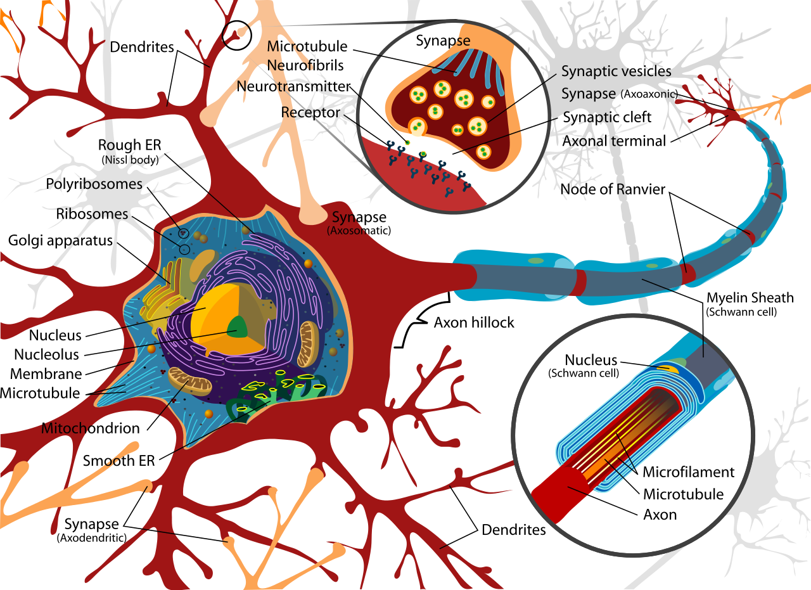

Machine Learning and Neural Networks
Roberto Santana
Department of Computer Science and Artificial Intelligence
University of the Basque Country
Introduction to Neural Networks: Table of Contents
Biological background
Why to look at the brain?
- It is still the most powerfull intelligent machine.
- Its inner working has been the inspiration of several AI paradigms.
- Much of work on Neural Networks have been based on inspired in studies of the neurobiological mechanisms.
- Some aspects of he brain mechanisms that support biological intelligence are still largely unexplored in ML approaches.
- Neuromorphic technologies (e.g., SpinNNAker project. ) use the brain as a model to develop computational architectures.
- Subject of ongoing multi-million Euro research projects (e.g., Blue brain project in Europe and BRAIN initiative in the US).
Biological background
Aspects from biological intelligence missing from ML
- Learning by rewiring: Brains learn fast, incrementally, and continuously. A singlen neuron can learn hundreds of different patterns by creating and activating different sets of synapses. Rewiring allows to continuously adding new patterns that do not interphere with each other.
- Sparse distributed representations (SDRs): There are millions of neurons but only a small percentage are active at any given time. Each neuron represents a different aspect of a concept. SDRs are inherently robust to errors and noise. Sets of neuron enconding related concepts overlap. Multiple ideas can be simultaneously represented.
- Embodiment: The brain receives impulses from the sensony organs which feeds the brain with constantly changing input. The neocortex can learn new objects with few movements and sensations.
J. Hawkins. What Intelligent Machines Need to Learn From the Neocortex. IEEE-Spectrum. June. Pp. 33-37. 2017.
Biological background
Nervous system
- Sensory systems: Collect information from the different body parts (visual, auditory, olfactory, gustatory, thermal, tactile etc. information)
- Motor system: Control movements.
- Brain: Where the greater part of information processing happens.
J. R. Anderson. Cognitive psychology and its implications. WH Freeman/Times Books/Henry Holt & Co. 1990.
Figure: Commons Wikipedia.
{kind=link}
Brain

The brain is the control center of the central nervous system of an animal and is responsible for perception, cognition, attention, memory, emotion, and action.
The brain is composed by the cerebrum, the brainstem, and the cerebellum.
In humans, the cerebrum forms the upper part of the brain. The brainstem is the posterior part of the brain and provides the main motor and sensory innervation to the face and neck.
The cerebellum lies beneath the cerebrum and has important functions in motor control.
T. Lewis. Human Brain: Facts, Functions & Anatomy. 2016.
Figure: Commons Wikipedia.
{kind=link}
Biological background
The structure of the neocortex
- It is divided into dozens of regions, each responsible for different cognitive functions.
- Within each region there are multiple layers of neurons, as well as dozens of neuron types.
- The neocortex has around \( 3 \times 10^{10} \) neurons. Only 1 or 2 percent of these neurons are firing at any given instant.
J. Hawkins. What Intelligent Machines Need to Learn From the Neocortex. IEEE-Spectrum. June. Pp. 33-37. 2017.
Some facts about the neocortex
- The neocortex is a deeply folded sheet of 2 mm thick that in humans takes up about 75 percent of the brain's volumen.
- Learning, memory formation, motor command generation, all these tasks involved the neocortex.
- The neocortex stores patterns primarily by forming new synapses.
Brain
The main differences between human and animals brains is their size (relative to body size).
Humans also have more neurons per unit volume than other animals.
The more complicated a brain gets, the more gyri and sulci, or wiggly hills and valleys, it has.
T. Lewis. Human Brain: Facts, Functions & Anatomy. 2016.
Figure: Commons Wikipedia.
{kind=link}
Brain
The outermost layer of the cerebrum is the cerebral cortex, which consists of four lobes: the frontal lobe, the parietal lobe, the temporal lobe and the occipital lobe.
Frontal lobe: Movement, reasoning, behavior, memory, speaking.
Parietal lobe: Knowing right from left, sensation, reading.
Temporal lobe: Understanding language, behavior, memory, hearing.
Occipital lobe: Vision.
Figure: Commons Wikipedia.
{kind=link}
Neurons
Neuron: A cell that collects and transmits electrical activity.
Soma: The cell body of the neuron, which contains the nucleus.
Dendrites: Short, heavily ramified branches that extend from the cell body.
Axon: A long structure, often covered by a myelin sheath, used by neurons to communicate with each other.
Figure: Commons Wikipedia.
{kind=link}
Neurons
Synapse: The place at which an axon and a dendrite almost touch each other

Releasing neurotransmitters axons can modify the membrane of the receiving dendrite
Synapses that reduce the potential difference are called excitatory, those that increase it are called inhibitory.
The sudden, temporary change of the electrical potential, which is called action potential, propagates along the axon.
Figure: Commons Wikipedia.
{kind=link}
Biological background
Neurons
Information is encoded in the changes in the electrical potential of the neuron's membrane and the number of nerve impulses that a neuron transmits per second ( firing rate ).

Neural coding: Studies how individual neurons and ensembles of neurons encode information.
R. Kruse et al. Computational intelligence: a methodological introduction. Springer. 2016.
Associanism
Definition
- Contiguity: Things or events with spatial or temporal proximity tend to be associated in the mind.
- Frequency: The number of co-occurrences of two events is proportional to the strength of association between these two events.
- Similarity: Thought of one event tends to triggers the thought of a similar event.
- Contrast: Thought of one event tends to triggers the thought of an opposite event.
Mind is a set of conceptual elements that are organized as associations between these elements.
Four laws of association (Aristotle)
Associanism
David Hartley (1705-1757)
- Memory could be conceived as smaller scale vibrations in the same regions of the brain as the original sensory experience.
- These vibrations act as a material basis for the stream of consciousness.
Thomas Hobbes (1588-1679)
- Complex experiences are association of simple experiences which are associations of sensations.
- Associations exists by means of coherence and frequency as its strength factor.
C. G. Boree. Psychology: the beginnings.
Initial neuron models
Hebbian learning rule
- Introduced by Donald Hebb and related to the ideas underlying the associationism model.
- The strength of the connection between two neurons should increase as the frequency of their co-ocurrence increases.
- Drawback: As co-ocurrences appears more, the weights do not cease to increase (unstableness of the Hebbian learning rule).
D. O. Hebb. The organization of behavior: A neuropsychological theory. Psychology Press. 1949.
H. Wang, B. Raj, and E. P. Xing. On the Origin of Deep Learning. arXiv preprint arXiv:1702.07800. 2017.
Initial neuron models
Hebbian learning rule
\[ \Delta w_i = \eta \, x_i \, y \]\( \Delta w_i \): change in synaptic weights
\( \eta \): learning rate
\(x_i\): input signals
\( y \): post-synaptic reponse.
Initial neuron models
Fire together, wire together
- When an axon of cell A is near enough to excite a cell B and repeatedly or persistently takes part in firing it, some growth process or metabolic change takes place in one or both cells such that A's efficiency, as one of the cells firing B, is increased.
Initial neuron models
Oja's rule
\( w^{t+1}_i = w^{t}_i \, \eta \, y (x_i - y w^{t}_i) \)
If \( \eta \) is very small, and the weights are normalized, i.e., \(Z= \left( \sum_i^n w_i^{2} \right)^\frac{1}{2}=1\)
Hebbian learning rule
\( w^{t+1}_i =w^{t}_i + \eta \, x_i \, y \)
Normalization
\( w^{t+1}_i = \frac{w^{t}_i + \eta x_i y}{ \left( \sum_{j=1}^{n} (w^{t}_j + \eta x_j y)^2 \right)^\frac{1}{2}} \),
where \( n \) is the number of neurons, and normalization is applied at the end of each iteration.
C. G. Boree. Psychology: the beginnings.
E. Oja. Simplified neuron model as a principal component analyzers. Journal of Mathematical Biology. 15(3):267-273. 1982.
Initial neuron models
McCulloch-Pitt (MPC) model
- Simple neuron model based on electrical circuits.
- The weights $w_i$ are fixed.
- All weights should be assigned by manual calculation.
- Inhibitory inputs are part of the model and influence its computation.
H. Wang, B. Raj, and E. P. Xing. On the Origin of Deep Learning. arXiv preprint arXiv:1702.07800. 2017.
Initial neuron models
McCulloch-Pitt (MPC) model
\[ y = \begin{cases} 1, & \mbox{if } \sum_i w_i x_i \geq \theta \wedge z_j=0, \, \forall j \\ 0, & \mbox{otherwise} \end{cases} \]
\( y \): output.
\(x_i\): input signals
\( \theta \): threshold
\(w_i\): weights
\(z_i\): inhibitory input
W. S. McCulloch and W. Pitts. A logical calculus of the ideas immanent in nervous activity. Bulletin of Mathematical Biophysics, Vol. 5, Pp. 115-133. 1943.
Perceptron
Characteristics
- Initially, an electronic device implementing some of the associationism ideas.
- It implements a linear function of the input signals.
- Perceptrons can learn to associate specific responses to specific stimuli.
- The memory of a perceptron is distributed in the sense that any association may make use of a large proportion of the cells in the system.
{kind=link}
F. Rosenblatt. The perceptron: a probabilistic model for information storage and organization in the brain. Psychological review, 65(6):386. 1958.
Perceptron
Characteristics
- Stimuli impinge on a retina of sensory units (S-points).
- Inputs are transmitted to a set of association cells (A-units) in a projection-area (\( A_{I} \)).
- The cells in the projection area each receive a number of connections from the sensory points.
- Between the projection area and the association area ( \( A_{II}\)), connections are assumed to be random.
- The responses ( \(R_1, R_2, \dots, R_n \)) are cells which respond in much the same fashion as the A-units.
Organization

F. Rosenblatt. The perceptron: a probabilistic model for information storage and organization in the brain. Psychological review, 65(6):386. 1958.
Perceptron
Characteristics
- Sensory units: Collect data.
- Association units: Linearly add the data with different weights and apply non-linear transform on the thresholded sum.
- Response units: Receive the data from association units and output them.
Organization

F. Rosenblatt. The perceptron: a probabilistic model for information storage and organization in the brain. Psychological review, 65(6):386. 1958.
Perceptron
Learning
- Non-linear activation units are introduced.
- Weights are updated as:
\[ w_i(t+1) = w_i(t) + \left (d_j -y_j(t) \right) x_{j,i}, \]
where \( d_j \) is the desired output
Modern perceptron

H. Wang, B. Raj, and E. P. Xing. On the Origin of Deep Learning. arXiv preprint arXiv:1702.07800. 2017.
Diagnostic test
Questions
- What is the difference between supervised learning and unsupervised learning?
- What is the difference between a classification problem and a regression problem?
- Mention the names of three supervised classification algorithms.
- What is the meaning of the parameter k in k-fold cross-validation?
- Mention the name of one optimization algorithm that can be used to find the optimal parameters of supervised learning algorithms.
- Mention the name of a Python library that can be used to solve regression problems.
- Given a test dataset \( \mathcal{D} \) of N instances and a classifier \( \mathcal{C} \) that has been already learned using a different training dataset. How to compute the accuracy of \( \mathcal{C} \) on \( \mathcal{D} \)?